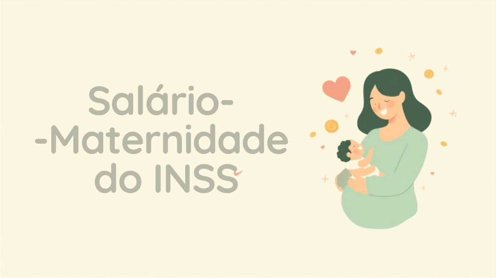

Salário-maternidade do INSS: quem tem direito, quanto tempo dura e como calcular o valor em 2026

O salário-maternidade é um dos benefícios mais buscados do INSS — e também um dos que geram mais dúvida, porque as regras mudam conforme a categoria de quem está grávida, adotando ou passando por guarda judicial para adoção. CLT, doméstica, MEI, autônoma, desempregada: cada uma segue uma fórmula diferente de cálculo, e nem todo mundo sabe que a exigência de tempo mínimo de contribuição para receber o benefício mudou nos últimos anos.
Neste guia você vai entender quem tem direito, se ainda é preciso cumprir carência, quantos dias de afastamento cada situação garante e como calcular, na prática, o valor que vai cair na sua conta.
O que é o salário-maternidade e quem paga
O salário-maternidade substitui a renda de quem se afasta do trabalho por causa do nascimento de um filho, adoção, guarda judicial para fins de adoção ou aborto não criminoso. Segundo o INSS, o benefício é isento de carência para todas as categorias de segurado — mas exige a comprovação da qualidade de segurado, ou seja, que você esteja contribuindo ou dentro do período de graça no momento do afastamento.
Quem paga também muda conforme o vínculo:
- Empregada CLT e trabalhadora avulsa: a empresa antecipa o pagamento no valor integral do salário e depois compensa esse valor nos tributos devidos ao INSS, via eSocial e DCTFWeb;
- Empregada doméstica, contribuinte individual, facultativa, segurada especial e desempregada em período de graça: o INSS paga diretamente à segurada, por meio do requerimento no Meu INSS.
Desde 2013, o benefício também pode ser concedido ao pai adotante, e desde 2014 existe previsão de transferência do benefício ao cônjuge ou companheiro em caso de falecimento da segurada, respeitado o tempo restante de afastamento.
Quem tem direito e a carência que mudou
Têm direito ao salário-maternidade: empregadas CLT, domésticas, trabalhadoras avulsas, contribuintes individuais (inclusive MEI), seguradas facultativas, seguradas especiais (trabalhadoras rurais) e desempregadas que ainda estejam dentro do período de graça — o prazo em que você continua protegida pelo INSS mesmo sem contribuir, hoje de 12 a 36 meses conforme o histórico de contribuições, como já detalhamos no guia sobre o auxílio-doença e a qualidade de segurado.
O ponto que mais confunde é a carência. Durante anos, contribuintes individuais, MEIs, facultativas e seguradas especiais precisavam comprovar pelo menos 10 meses de contribuição para ter direito ao benefício. O Supremo Tribunal Federal (STF) julgou essa exigência inconstitucional nas ADIs 2.110 e 2.111, e o INSS regulamentou a mudança pela Instrução Normativa nº 188/2025: hoje, a carência foi extinta para todas as categorias. Basta comprovar a qualidade de segurado no momento do parto, da adoção ou da guarda.
Regra prática: se você é MEI, autônoma ou contribuinte facultativa e está com o DAS ou a guia em dia (ou dentro do período de graça), não existe mais tempo mínimo de contribuição para pedir o salário-maternidade. É preciso apenas comprovar que está — ou estava recentemente — na condição de segurada.
Quantos dias de afastamento você tem direito
A duração padrão é de 120 dias, e vale para nascimento, natimorto, adoção e guarda judicial para fins de adoção (com a criança ou adolescente de até 12 anos). Há exceções:
- 120 dias — regra geral (parto, natimorto, adoção, guarda para adoção);
- 180 dias — em empresas inscritas no programa Empresa Cidadã, que prorrogam a licença por mais 60 dias com incentivo fiscal para o empregador;
- 14 dias — em caso de aborto não criminoso ou espontâneo, comprovado por atestado médico.
O pedido pode ser feito a partir de 28 dias antes da data prevista do parto (mediante atestado médico) ou a partir da data do nascimento, da adoção ou da guarda. Vale lembrar que esse afastamento é diferente da licença-paternidade, que é de 5 dias corridos pela CLT (ou até 20 dias em empresas do programa Empresa Cidadã) e não é paga pelo INSS, e sim diretamente pelo empregador.
Como calcular o valor, por categoria
Aqui está o ponto em que mais gente erra as contas, porque a fórmula muda de categoria para categoria. Segundo o INSS, o cálculo funciona assim:
| Categoria | Como é calculado |
|---|---|
| Empregada CLT e trabalhadora avulsa | Remuneração integral de um mês de trabalho. Se o salário é variável, usa-se a média simples dos últimos 6 salários, sem contar 13º e adiantamento de férias |
| Empregada doméstica | Último salário de contribuição, respeitando o piso e o teto do INSS. Se variável, média dos últimos 6 salários |
| Contribuinte individual e facultativa (inclui MEI) | 1/12 da soma dos últimos 12 salários de contribuição, apurados em um período de até 15 meses |
| Segurada especial (trabalhadora rural) | Um salário mínimo por mês de benefício; se contribuir facultativamente, entra a mesma fórmula da contribuinte individual |
| Desempregada em período de graça | Mesma fórmula da contribuinte individual: 1/12 da soma dos últimos 12 salários de contribuição em até 15 meses |
Em todos os casos valem as travas do sistema previdenciário: o valor não pode ficar abaixo do piso de um salário mínimo, que em 2026 é de R$ 1.621,00, nem ultrapassar o teto do INSS, de R$ 8.475,55 — os mesmos limites que valem para a aposentadoria e a pensão por morte. Empregadas com carteira assinada que recebem acima do teto do funcionalismo (art. 37, XI da Constituição) seguem uma regra própria, ligada ao subsídio de ministro do STF.
Exemplo prático
Uma contribuinte individual (por exemplo, autônoma ou MEI) que recolheu sobre um salário de contribuição de R$ 2.000 nos últimos 12 meses recebe: R$ 2.000 × 12 ÷ 12 = R$ 2.000 por mês de benefício, durante os 120 dias de afastamento — ou seja, 4 parcelas mensais de aproximadamente R$ 2.000. Se essa mesma contribuinte tivesse recolhido sobre o piso, o cálculo resultaria em R$ 1.621,00, que é o valor mínimo garantido, ainda que o resultado da fórmula fosse menor.
Como solicitar o benefício
- Empregada CLT: comunique a empresa e apresente o atestado médico ou a certidão de nascimento — o pagamento começa direto na folha, sem necessidade de pedir ao INSS;
- Doméstica, contribuinte individual, facultativa, segurada especial e desempregada: acesse o Meu INSS (aplicativo ou site) ou ligue para o telefone 135, escolha "Salário-Maternidade Urbano" ou "Rural" e envie os documentos digitalizados: identidade, CPF, certidão de nascimento (ou termo de guarda/adoção) e comprovantes de contribuição;
- Acompanhe a análise pelo próprio Meu INSS. Desde a Lei nº 15.415/2026, quando o INSS não decide o requerimento em até 30 dias, o benefício passa a ser concedido de forma provisória e automática, sem prejuízo de revisão posterior;
- O prazo para requerer o benefício é de até 5 anos a contar do evento que gerou o direito (parto, adoção ou guarda), mas quanto antes você pedir, mais cedo o dinheiro entra.
Perguntas rápidas
MEI precisa estar com o DAS em dia para receber?
Sim, é preciso comprovar a qualidade de segurada — isto é, estar contribuindo (DAS em dia) ou dentro do período de graça. Mas, como vimos, não existe mais exigência de tempo mínimo de contribuição.
Quem está desempregada, mas nunca contribuiu como autônoma, tem direito?
Só se ainda estiver dentro do período de graça de um vínculo anterior (empregada CLT, por exemplo). Sem qualidade de segurado, não há direito ao benefício.
O salário-maternidade sofre desconto de INSS ou imposto de renda?
Não há desconto de INSS sobre o próprio benefício. Pode haver retenção de imposto de renda na fonte, conforme a faixa de valor recebido, da mesma forma que ocorre com outros benefícios do INSS.
Dá para acumular salário-maternidade com outro benefício do INSS?
Não. Assim como o auxílio-doença, o salário-maternidade não pode ser recebido em conjunto com outro benefício por incapacidade ao mesmo tempo — a segurada recebe o que for mais vantajoso.
Confirme sempre no canal oficial
As regras aqui descritas seguem as informações públicas do INSS, a Lei nº 8.213/1991, a Instrução Normativa INSS nº 188/2025 (que regulamentou o fim da carência após as ADIs 2.110 e 2.111 do STF) e a Lei nº 15.415/2026. Como esse é um benefício que envolve prazos e documentos por categoria, confirme sempre a sua situação específica no Meu INSS, pelo telefone 135 ou em uma agência do INSS antes de se planejar.
Se você está se preparando financeiramente para a licença, vale organizar o orçamento com antecedência: nosso guia sobre reserva de emergência ajuda a calcular quanto guardar antes da renda mudar, e quem também é MEI pode conferir as regras de DAS e faturamento em 2026 para não perder prazos durante o afastamento.